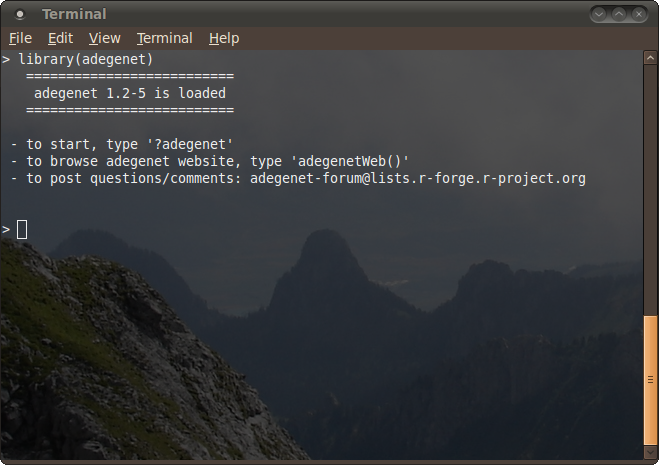
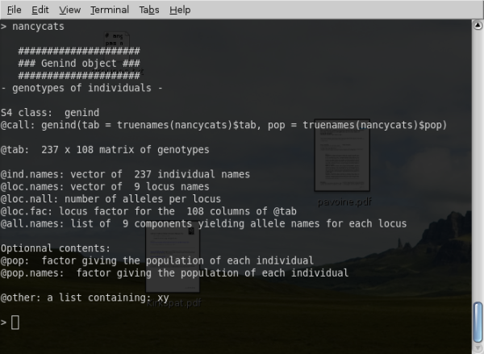
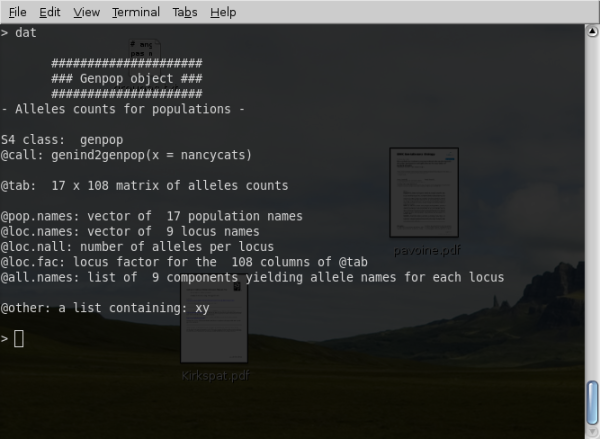

Here are a few pictures of adegenet
version 1.1-0 working on a linux system. Users are encouraged
to submit their own artwork.
Adegenet loading:

The printing of a genind object:

The printing of a genpop object:

Multiple co-inertia analysis in
the example of microbov dataset (click to enlarge):
Monmonier algorithm example: